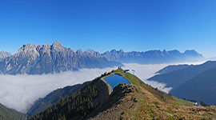
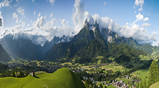
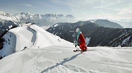
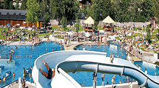

Saalfelden am Steinernen Meer ist eine Stadt im österreichischen Bundesland Salzburg und ist der Zentralort des Pinzgauer Saalachtals. Die Gemeinde liegt rund 14 km nördlich der Bezirkshauptstadt Zell am See. Mit 16.400 Einwohnern (Stand 1. Jänner 2016) ist Saalfelden die bevölkerungsreichste Stadt des Bezirks Zell am See und nach Salzburg und Hallein die Stadt mit der dritthöchsten Bevölkerung im Bundesland Salzburg.

Das Saalfeldner Becken[Bearbeiten | Quelltext bearbeiten]Saalfelden am Steinernen Meer liegt auf 748 m Seehöhe und umfasst 118 km². Den größten Anteil der Gemeindefläche nimmt das Saalfeldner Becken ein, welches eingebettet ist zwischendem Steinernen Meer im Nordenden Leoganger Steinbergen und dem Biberg im Westensowie dem Hochkönig-Massiv und den Dientener Bergen im Osten.

Gegen Süden ist das Becken weitläufig gegen das Zeller Becken des Zeller Sees und der Salzach offen und ermöglicht den Blick auf die Hohen Tauern, insbesondere auf das Kitzsteinhorn und das Wiesbachhorn. Die beiden Becken sind durch eine der Landschaft kaum erkenntliche Talwasserscheide getrennt. Diese Talung ist eines der größten inneralpinen Becken.

Der Hauptfluss des Beckens ist die Saalach. Diese entspringt im hinteren Glemmtal, tritt südlich von Saalfelden in das Becken ein und durchfließt es von Süd nach Nord. Der das Stadtgebiet Saalfeldens in Ost-West-Richtung durchfließende rechte Nebenfluss der Saalach ist die Urslau und als linker Nebenfluss ergießt sich von Westen kommend die Leoganger Ache in die Saalach. Zudem existieren einige kleinere Nebengewässer.

Mitten im Becken liegt die gut 100 m hohe Erhebung des Kühbichls (Kühbühel).Der einzige See im weitläufigen Becken ist der künstlich angelegte und zu Freizeitzwecken genutzte Ritzensee. Etliche weitere, ebenfalls künstlich angelegte Teiche dienen in erster Linie der Fischerei und dem Tourismus.
Das Saalfeldner Becken war bereits in der Bronzezeit und auch nach dem Zuzug bajuwarischer Einwanderer mehr oder weniger stark besiedelt. Eine Siedlung oder Ortschaft zu jener Zeit ist aber nicht in der Dimension vorzustellen, wie sich Dörfer oder Orte heute präsentieren.